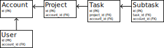

Multi-Tenancy
Strategies
with
Django+PostgreSQL
Problem Statement
We've using Django & PostgreSQL on our website.
How can we ensure users don't see data that doesn't belong to them?
"Tenancy": logically isolated set of data
Talk Outline
- Django permissions
- Multiple apps, multiple databases
- Single app, multiple databases
- Single app, single database
Django Permissions
Default System:
user.has_perm("my_app.change_book")
- Quite Limited
Django Permissions
Alternative:
user.has_perm("my_app.change_book", book)
- Can use 3rd-party packages (eg
rules) - Roll your own
AUTHENTICATION_BACKEND - Update CBVs to use object-based permissions
- Django System Checks
Multiple App Servers,
Multiple Databases

Multiple App Servers,
Multiple Databases
- ✅ Code Simplicity
- ✅ Isolation
- ❌ Scalability
- ❌ Cross-Tenancy Queries
- ❌ Administration, Deployment
Single App Server,
Multiple Databases

Single App Server,
Multiple Databases
- ✅ Code Simplicity
- ✅ Good Isolation
- ❌ Scalability
- ❌ Cross-Tenancy Queries
- ❌ Administration, Deployment
Single App Server,
Multiple Databases Schemas
Single App Server,
Multiple Databases Schemas
- ✅ Code Simplicity
- ✅ Isolation
- *️⃣ Scalability
- *️⃣ Cross-Tenancy Queries
- *️⃣ Administration, Deployment
- ⚠️ Transaction limits, connection pooling
django-tenants
Single App Server,
Shared Tables
Single App Server,
Shared Tables
- Django Managers
- Denormalisating Tenancy
- Postgres Users + RLS
- Postgres Triggers + RLS
Single App Server,
Single Database
- ❌ Code Simplicity
- *️⃣ Isolation
- ✅ Scalability
- ✅ Cross-Tenancy Queries
- ✅ Administration, Deployment
Custom Model Managers

class ProjectQuerySet(QuerySet):
def filter_tenant(queryset, account):
return self.queryset.filter(account=account)
class Project(Model):
objects = Manager.from_queryset(ProjectQuerySet)()
Custom Model Managers
class SubtaskQuerySet(QuerySet):
def filter_tenant(queryset, account):
return self.queryset.filter(task__project__account=account)
class Subtask(Model):
objects = Manager.from_queryset(SubtaskQuerySet)()
Custom Model Managers
- ⚠️ Non-ORM queries
- ⚠️ Aggregate queries
- ⚠️️ FK Leakage:
user.country.user_set
Mandatory Tenant Filtering
- Remember whether
filter_tenantwas called - Log a warning or Raise an exception
- ️️⚠️️
_base_managervs_default_manager
class Project(Model):
objects = ProjectManager(require_filter_tenant=True)
all_tenants = ProjectManager(require_filter_tenant=False)
class Meta:
base_manager_name = "all_tenants"
Tenancy Denormalisation

Tenancy Denormalisation

Tenancy Denormalisation
- *️⃣ Code Simplicity
- *️⃣ Isolation
- ✅ Scalability
- ✅ Cross-Tenancy Queries
- ✅ Administration, Deployment
- ⚠️️ Harder to move data between tenants
- Standard denormalisation caveats
django-multitenant
Postgres Users,
Row-level Security
- Create a new postgres role for each tenancy
- Potential performance impact (TODO: re-test with more recent versions)
Postgres Triggers,
Row-level Security
Assumes tenant ID denormalised
- ...